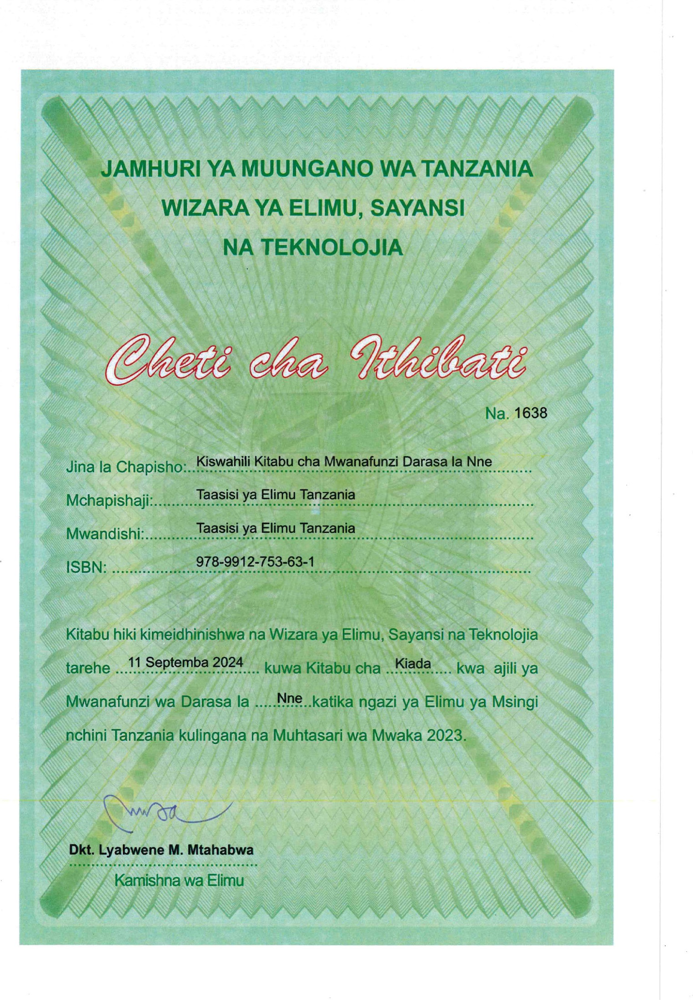

Kiswahili
Kitabu cha Mwanafunzi
Darasa la Nne

Taasisi ya Elimu Tanzania
FOR ONLINE READING ONLY
KISWAHILI LENYE MABORESHO YOTE.indd
12/09/2025 13:22
JAMHURI YA MUUNGANO WA TANZANIA
WIZARA YA ELIMU, SAYANSI NA TEKNOLOJIA
Cheti cha Ithibati
Na. 1638
Jina la Chapisho: Kiswahili Kitabu cha Mwanafunzi Darasa la Nne
Mchapishaji: Taasisi ya Elimu Tanzania
Mwandishi: Taasisi ya Elimu Tanzania
ISBN: 978-9912-753-63-1
Kitabu hiki kimeidhinishwa na Wizara ya Elimu, Sayansi na Teknolojia tarehe 11 Septemba 2024 kuwa Kitabu cha Kiada kwa ajili ya Mwanafunzi wa Darasa la Nne katika ngazi ya Elimu ya Msingi nchini Tanzania kulingana na Muhtasari wa Mwaka 2023.
Dkt. Lyabwene M. Mtabwa
Kamishna wa Elimu